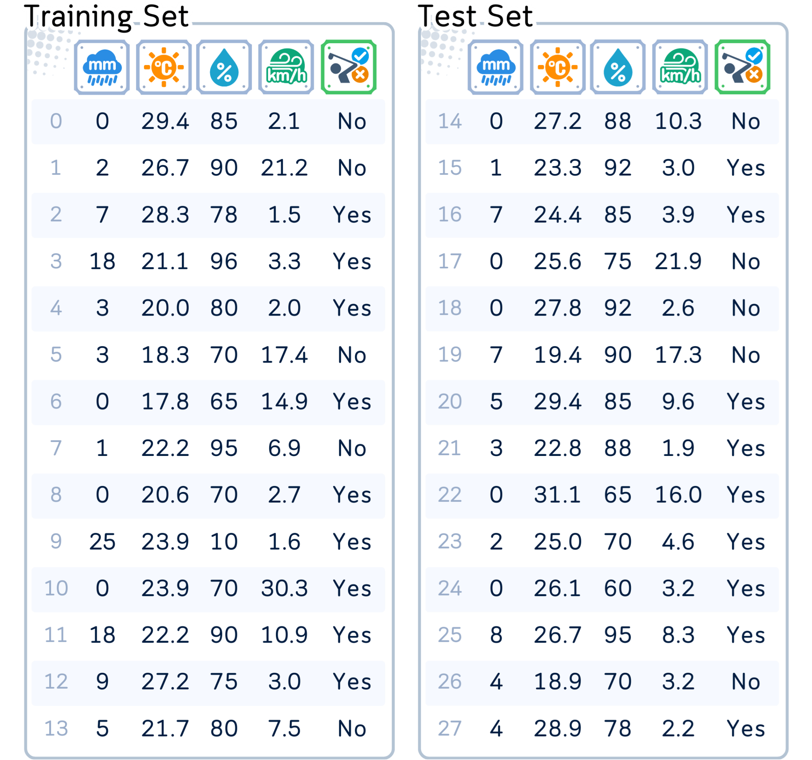
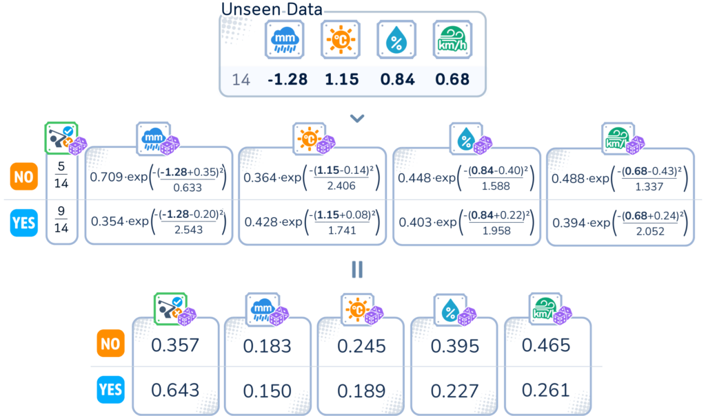

Bell-shaped assumptions for better predictions
Samy Baladram
Building on our previous article about Bernoulli Naive Bayes, which handles binary data, we now explore Gaussian Naive Bayes for continuous data. Unlike the binary approach, this algorithm assumes each feature follows a normal (Gaussian) distribution.
Here, we’ll see how Gaussian Naive Bayes handles continuous, bell-shaped data – ringing in accurate predictions – all without getting into the intricate math of Bayes’ Theorem.
Like other Naive Bayes variants, Gaussian Naive Bayes makes the "naive" assumption of feature independence. It assumes that the features are conditionally independent given the class label.
However, while Bernoulli Naive Bayes is suited for datasets with binary features, Gaussian Naive Bayes assumes that the features follow a continuous normal (Gaussian) distribution. Although this assumption may not always hold true in reality, it simplifies the calculations and often leads to surprisingly accurate results.
Throughout this article, we’ll use this artificial golf dataset (made by author) as an example. This dataset predicts whether a person will play golf based on weather conditions.
Columns: ‘RainfallAmount’ (in mm), ‘Temperature’ (in Celcius), ‘Humidity’ (in %), ‘WindSpeed’ (in km/h) and ‘Play’ (Yes/No, target feature)
# IMPORTING DATASET #
from sklearn.model_selection import train_test_split
from sklearn.metrics import accuracy_score
import pandas as pd
import numpy as np
dataset_dict = {
'Rainfall': [0.0, 2.0, 7.0, 18.0, 3.0, 3.0, 0.0, 1.0, 0.0, 25.0, 0.0, 18.0, 9.0, 5.0, 0.0, 1.0, 7.0, 0.0, 0.0, 7.0, 5.0, 3.0, 0.0, 2.0, 0.0, 8.0, 4.0, 4.0],
'Temperature': [29.4, 26.7, 28.3, 21.1, 20.0, 18.3, 17.8, 22.2, 20.6, 23.9, 23.9, 22.2, 27.2, 21.7, 27.2, 23.3, 24.4, 25.6, 27.8, 19.4, 29.4, 22.8, 31.1, 25.0, 26.1, 26.7, 18.9, 28.9],
'Humidity': [85.0, 90.0, 78.0, 96.0, 80.0, 70.0, 65.0, 95.0, 70.0, 80.0, 70.0, 90.0, 75.0, 80.0, 88.0, 92.0, 85.0, 75.0, 92.0, 90.0, 85.0, 88.0, 65.0, 70.0, 60.0, 95.0, 70.0, 78.0],
'WindSpeed': [2.1, 21.2, 1.5, 3.3, 2.0, 17.4, 14.9, 6.9, 2.7, 1.6, 30.3, 10.9, 3.0, 7.5, 10.3, 3.0, 3.9, 21.9, 2.6, 17.3, 9.6, 1.9, 16.0, 4.6, 3.2, 8.3, 3.2, 2.2],
'Play': ['No', 'No', 'Yes', 'Yes', 'Yes', 'No', 'Yes', 'No', 'Yes', 'Yes', 'Yes', 'Yes', 'Yes', 'No', 'No', 'Yes', 'Yes', 'No', 'No', 'No', 'Yes', 'Yes', 'Yes', 'Yes', 'Yes', 'Yes', 'No', 'Yes']
}
df = pd.DataFrame(dataset_dict)
# Set feature matrix X and target vector y
X, y = df.drop(columns='Play'), df['Play']
# Split the data into training and testing sets
X_train, X_test, y_train, y_test = train_test_split(X, y, train_size=0.5, shuffle=False)
print(pd.concat([X_train, y_train], axis=1), end='nn')
print(pd.concat([X_test, y_test], axis=1))
Gaussian Naive Bayes works with continuous data, assuming each feature follows a Gaussian (normal) distribution.
Gaussian Naive Bayes uses the normal distribution to model the likelihood of different feature values for each class. It then combines these likelihoods to make a prediction.
Remember that this algorithm naively assume that all the input features are having Gaussian/normal distribution?
Since we are not really sure about the distribution of our data, especially for features that clearly don’t follow a Gaussian distribution, applying a power transformation (like Box-Cox) before using Gaussian Naive Bayes can be beneficial. This approach can help make the data more Gaussian-like, which aligns better with the assumptions of the algorithm.
All columns are scaled using Power Transformation (Box-Cox Transformation) and then standardized.
from sklearn.preprocessing import PowerTransformer
# Initialize and fit the PowerTransformer
pt = PowerTransformer(standardize=True) # Standard Scaling already included
X_train_transformed = pt.fit_transform(X_train)
X_test_transformed = pt.transform(X_test)
Now we are ready for the training.
1. "Class Probability Calculation": For each class, calculate its probability: (Number of instances in this class) / (Total number of instances)
from fractions import Fraction
def calc_target_prob(attr):
total_counts = attr.value_counts().sum()
prob_series = attr.value_counts().apply(lambda x: Fraction(x, total_counts).limit_denominator())
return prob_series
print(calc_target_prob(y_train))
2. "Feature Probability Calculation": For each feature and each class, calculate the mean (μ) and standard deviation (σ) of the feature values within that class using the training data. Then, calculate the probability using Gaussian Probability Density Function (PDF) formula.
For each weather condition, determine the mean and standard deviation for both "YES" and "NO" instances. Then calculate their PDF using the PDF formula for normal/Gaussian distribution.
The same process is applied to all of the other features.
def calculate_class_probabilities(X_train_transformed, y_train, feature_names):
classes = y_train.unique()
equations = pd.DataFrame(index=classes, columns=feature_names)
for cls in classes:
X_class = X_train_transformed[y_train == cls]
mean = X_class.mean(axis=0)
std = X_class.std(axis=0)
k1 = 1 / (std * np.sqrt(2 * np.pi))
k2 = 2 * (std ** 2)
for i, column in enumerate(feature_names):
equation = f"{k1[i]:.3f}·exp(-(x-({mean[i]:.2f}))²/{k2[i]:.3f})"
equations.loc[cls, column] = equation
return equations
# Use the function with the transformed training data
equation_table = calculate_class_probabilities(X_train_transformed, y_train, X.columns)
# Display the equation table
print(equation_table)
3. "Smoothing": Gaussian Naive Bayes uses a unique smoothing approach. Unlike Laplace smoothing in other variants, it adds a tiny value (0.000000001 times the largest variance) to all variances. This prevents numerical instability from division by zero or very small numbers.
Given a new instance with continuous features:
1. "Probability Collection": For each possible class: · Start with the probability of this class occurring (class probability). · For each feature in the new instance, calculate the probability density function of that feature within the class.
For ID 14, we calculate the PDF each of the feature for both "YES" and "NO" instances.
2. "Score Calculation & Prediction": For each class: · Multiply all the collected PDF values together. · The result is the score for this class. · The class with the highest score is the prediction.

from scipy.stats import norm
def calculate_class_probability_products(X_train_transformed, y_train, X_new, feature_names, target_name):
classes = y_train.unique()
n_features = X_train_transformed.shape[1]
# Create column names using actual feature names
column_names = [target_name] + list(feature_names) + ['Product']
probability_products = pd.DataFrame(index=classes, columns=column_names)
for cls in classes:
X_class = X_train_transformed[y_train == cls]
mean = X_class.mean(axis=0)
std = X_class.std(axis=0)
prior_prob = np.mean(y_train == cls)
probability_products.loc[cls, target_name] = prior_prob
feature_probs = []
for i, feature in enumerate(feature_names):
prob = norm.pdf(X_new[0, i], mean[i], std[i])
probability_products.loc[cls, feature] = prob
feature_probs.append(prob)
product = prior_prob * np.prod(feature_probs)
probability_products.loc[cls, 'Product'] = product
return probability_products
# Assuming X_new is your new sample reshaped to (1, n_features)
X_new = np.array([-1.28, 1.115, 0.84, 0.68]).reshape(1, -1)
# Calculate probability products
prob_products = calculate_class_probability_products(X_train_transformed, y_train, X_new, X.columns, y.name)
# Display the probability product table
print(prob_products)

For this particular dataset, this accuracy is considered quite good.
from sklearn.naive_bayes import GaussianNB
from sklearn.metrics import accuracy_score
# Initialize and train the Gaussian Naive Bayes model
gnb = GaussianNB()
gnb.fit(X_train_transformed, y_train)
# Make predictions on the test set
y_pred = gnb.predict(X_test_transformed)
# Calculate the accuracy
accuracy = accuracy_score(y_test, y_pred)
# Print the accuracy
print(f"Accuracy: {accuracy:.4f}")
GaussianNB is known for its simplicity and effectiveness. The main thing to remember about its parameters is:
The key takeaway is that this algoritm is designed to work well out-of-the-box. In most situations, you can use it without worrying about parameter tuning.
Gaussian Naive Bayes stands as an efficient classifier for a wide range of applications involving continuous data. Its ability to handle real-valued features extends its use beyond binary classification tasks, making it a go-to choice for numerous applications.
While it makes some assumptions about data (feature independence and normal distribution), when these conditions are met, it gives robust performance, making it a favorite among both beginners and seasoned data scientists for its balance of simplicity and power.
import pandas as pd
from sklearn.naive_bayes import GaussianNB
from sklearn.preprocessing import PowerTransformer
from sklearn.metrics import accuracy_score
from sklearn.model_selection import train_test_split
# Load the dataset
dataset_dict = {
'Rainfall': [0.0, 2.0, 7.0, 18.0, 3.0, 3.0, 0.0, 1.0, 0.0, 25.0, 0.0, 18.0, 9.0, 5.0, 0.0, 1.0, 7.0, 0.0, 0.0, 7.0, 5.0, 3.0, 0.0, 2.0, 0.0, 8.0, 4.0, 4.0],
'Temperature': [29.4, 26.7, 28.3, 21.1, 20.0, 18.3, 17.8, 22.2, 20.6, 23.9, 23.9, 22.2, 27.2, 21.7, 27.2, 23.3, 24.4, 25.6, 27.8, 19.4, 29.4, 22.8, 31.1, 25.0, 26.1, 26.7, 18.9, 28.9],
'Humidity': [85.0, 90.0, 78.0, 96.0, 80.0, 70.0, 65.0, 95.0, 70.0, 80.0, 70.0, 90.0, 75.0, 80.0, 88.0, 92.0, 85.0, 75.0, 92.0, 90.0, 85.0, 88.0, 65.0, 70.0, 60.0, 95.0, 70.0, 78.0],
'WindSpeed': [2.1, 21.2, 1.5, 3.3, 2.0, 17.4, 14.9, 6.9, 2.7, 1.6, 30.3, 10.9, 3.0, 7.5, 10.3, 3.0, 3.9, 21.9, 2.6, 17.3, 9.6, 1.9, 16.0, 4.6, 3.2, 8.3, 3.2, 2.2],
'Play': ['No', 'No', 'Yes', 'Yes', 'Yes', 'No', 'Yes', 'No', 'Yes', 'Yes', 'Yes', 'Yes', 'Yes', 'No', 'No', 'Yes', 'Yes', 'No', 'No', 'No', 'Yes', 'Yes', 'Yes', 'Yes', 'Yes', 'Yes', 'No', 'Yes']
}
df = pd.DataFrame(dataset_dict)
# Prepare data for model
X, y = df.drop('Play', axis=1), (df['Play'] == 'Yes').astype(int)
# Split data into training and testing sets
X_train, X_test, y_train, y_test = train_test_split(X, y, test_size=0.5, shuffle=False)
# Apply PowerTransformer
pt = PowerTransformer(standardize=True)
X_train_transformed = pt.fit_transform(X_train)
X_test_transformed = pt.transform(X_test)
# Train the model
nb_clf = GaussianNB()
nb_clf.fit(X_train_transformed, y_train)
# Make predictions
y_pred = nb_clf.predict(X_test_transformed)
# Check accuracy
accuracy = accuracy_score(y_test, y_pred)
print(f"Accuracy: {accuracy:.4f}")
Next